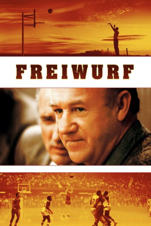
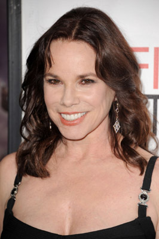
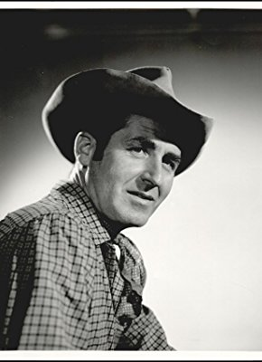
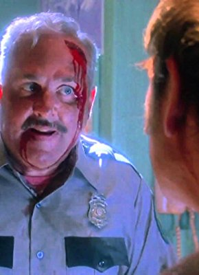
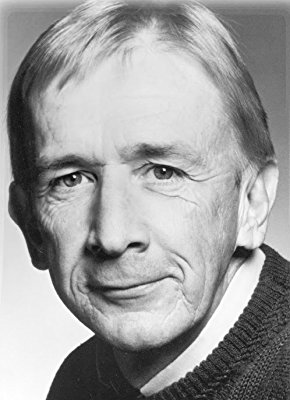

#8953 Freiwurf
Alternativ: Hoosiers
Auszeichnungen: für 2 Oscars nominiert
 
 IMDB-Wertung: 7.6 / 10
IMDB-Wertung: 7.6 / 10  Metascore: 0
Metascore: 0 
Nach langen Jahren Pause versucht sich Norman Dale als Basketballtrainer in einem Provinznest Indianas. Er hat schwer mit seiner Jähzornigkeit und dem konservativen Menschenschlag zu kämpfen, der seinen Trainingsmethoden mißtraut. Nach anfänglichen Mißerfolgen droht die Entlassung. Da erklärt sich Jimmy, der beste Spieler des Ortes, bereit, für Norman die Mannschaft zu verstärken. Nun beginnt eine Siegesserie, die bis ins Endspiel nach Indianapolis führt.
Jahr: 1986
Dauer: 109 Minuten
FSK: 6
Land: England Studio: RCA/Columbia Pictures International VideoTonspuren:
Untertitel:
Auflösung: 1080p (1920x1080) Größe: 7546 MB
Genre: Drama, Sport
Regisseur: David Anspaugh
Drehbuch: Angelo Pizzo
Soundtrack: Jerry Goldsmith
Darsteller:
 Gene Hackman als Coach Norman Dale
Gene Hackman als Coach Norman Dale-  Barbara Hershey als Myra Fleener
 Dennis Hopper als Shooter
Dennis Hopper als Shooter-  Sheb Wooley als Cletus
- Chelcie Ross als George
-  Robert Swan als Rollin
-  Michael Sassone als Preacher Purl
- Ken Strunk als Referee (Dugger)
- David Neidorf als Everett
- Anthony Bruce als Basketball Fan (uncredited)
 Mark Falvo als Basketball Fan (uncredited)
Mark Falvo als Basketball Fan (uncredited)- Steve Mirer als Townsperson at church (uncredited)
- Fern Persons als Opal Fleener
- Michael O'Guinne als Rooster
- Wil Dewitt als Reverend Doty
- John Robert Thompson als Sheriff Finley
- Gloria Dorson als Millie
- Mike Dalzell als Mayor Carl
- Skip Welker als Junior
- Eric Gilliom als J. June
- Robert Boyle als Referee (Oolitic)
- Jerry D. Petro als Referee (Oolitic)
- Sam Smiley als Referee (Cedar Knob)
- Tom McConnell als Coach (Cedar Knob)
- Dennis Farkas als Gorilla player (Cedar Knob)
- Tim Fogarty als Referee (Verdi)
- Spyridon Stratigos als Referee (Logootee)
- Jerry D. Larrison als Referee (Terhune)
- Thomas W. Marshall als Referee (Terhune)
- Gary Long als Coach (Jasper)
- C.W. Mundy als Coach (Jasper)
- Jeff Moster als Player (Jasper)
- Ralph H. Shively als Doc Buggins
- Rich Komenich als Reporter
- Scott Miley als Reporter
- Robert Sutton als Reporter
- Ray Crowe als Coach (State)
- Ray Craft als Official (finals)
- Tom Carnegie als Finals P.A. Announcer
- Hilliard Gates als Radio Announcer (finals)
- Laura Robling als Hickory Cheerleader
- Nancy Harris als Hickory Cheerleader
- Libbey Schenck als Hickory Cheerleader
- Brad Boyle als Whit
- Steve Hollar als Rade
- Brad Long als Buddy
- Kent Poole als Merle
- Wade Schenck als Ollie
- Scott Summers als Strap
- Maris Valainis als Jimmy
Datei: X:\1986\Freiwurf (1986, FSK6, 1920x1080).mkv seit 16.05.2018
Festplatte: HD 1980-1986
 Es gibt insgesamt 50 Filme in der Gruppe '1986'
Es gibt insgesamt 50 Filme in der Gruppe '1986'